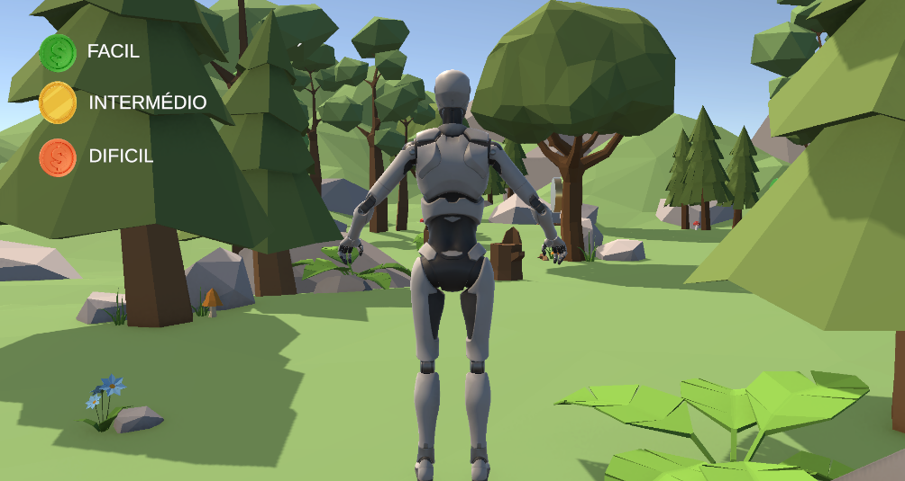
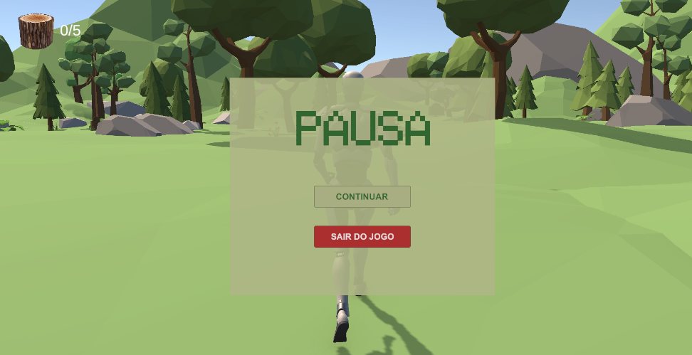
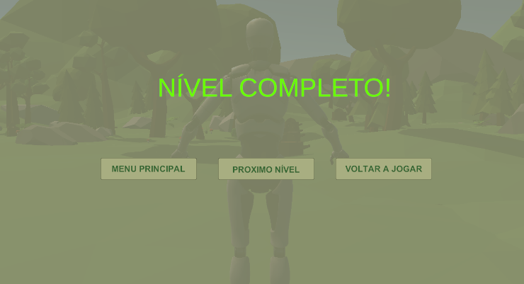
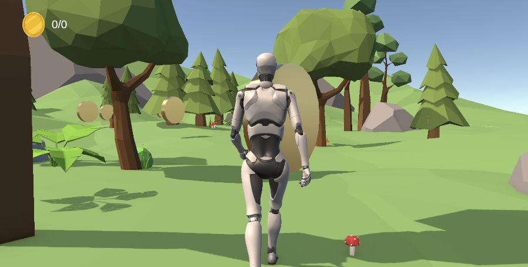
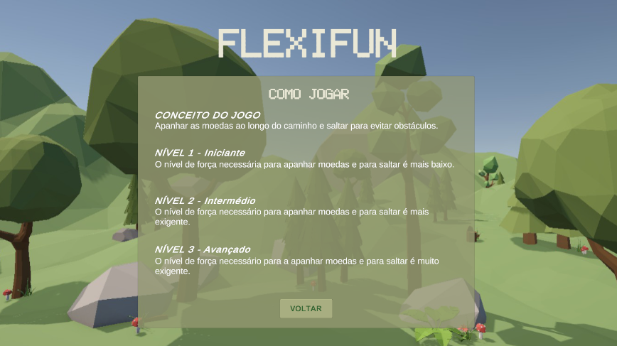
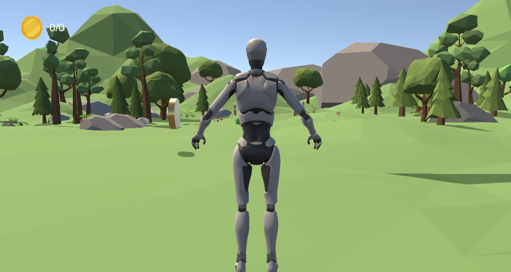
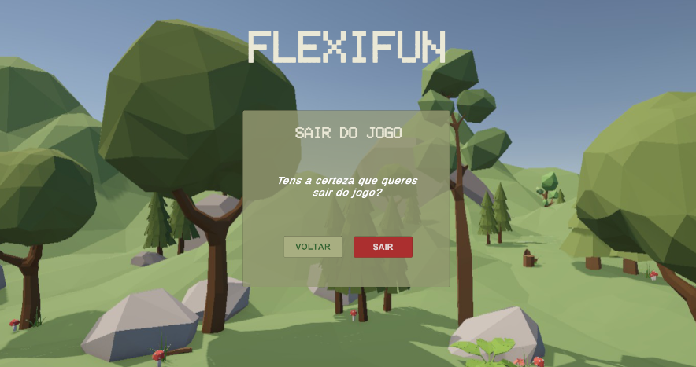
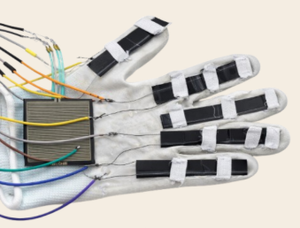
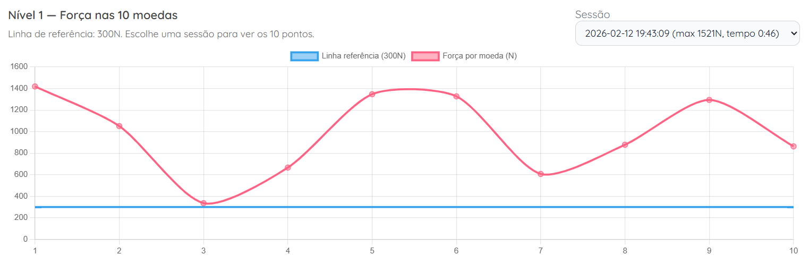

Project Motivation
Traditional physiotherapy can often be repetitive and demotivating for patients. The FlexiFun project was born from the need to create a more engaging and objective way to monitor hand rehabilitation, combining gamification with real-time clinical data.







The Solution
An integrated system featuring a sensorized glove that captures hand movements. These movements are translated into actions within a Unity-based game. Patients achieve certain force or flexion values to advance to the next level.

Clinical Monitoring
A dedicated PHP web dashboard allows physiotherapists to track session history and range of motion improvements. Monitoring the evolution of patients becomes easier, and rehabilitation sessions are more fun.

Technical Implementation
- Hardware: Flex sensors and microcontroller for movement acquisition.
- Game Design: Developed in Unity (C#) for an immersive experience.
- Data Architecture: PHP server-side logic and MySQL for secure patient records.